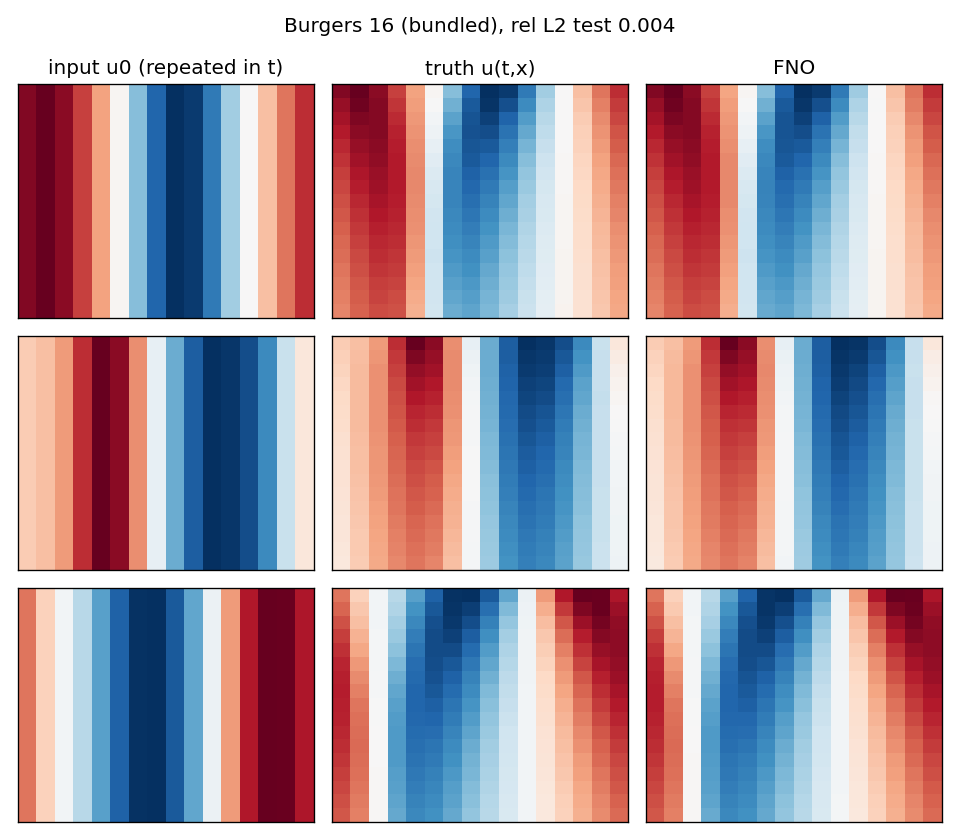
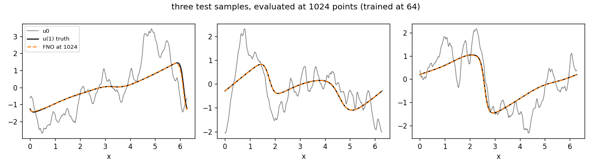
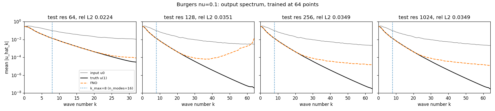
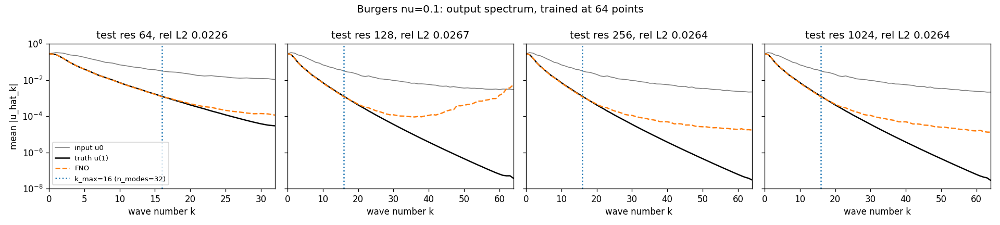

Module 2 of 14 · one week
The Fourier layer is usually presented as a diagram to accept. This module builds it instead: from the Green's function of a linear PDE, to the general integral layer, to the convolution theorem, to the multiplier that an FNO learns. Then it trains one on Burgers' equation and reads the output spectrum, which the paper does not show and which contains a defect the error number hides.
Anandkumar gives the argument for the Fourier choice in the earlier episode between 00:19:19 and 00:25:53, and it has three parts (research_notes/company-episode.md:33-37). Differentiation is a local operation but integration, its inverse, is not, so a layer that is meant to invert a differential operator has to reach across the whole domain. The Fourier transform does that reaching in \(O(n\log n)\) where attention would cost \(O(n^2)\). And the nonlinearity between Fourier layers is what stops the whole stack collapsing into one fixed basis expansion.
Every part of that is correct, and none of it tells you what the layer computes. You cannot check a claim about a layer you have only seen as a box in a figure, and you certainly cannot debug one. So this module derives the layer from the mathematics it is an approximation of, arriving at a formula in which every symbol has been earned, and then trains it and looks at what comes out.
Solving a linear PDE means applying an integral operator, and this is not an analogy. Take Module 0's destination example, \(-u'' = f\) on \((0,1)\) with \(u(0) = u(1) = 0\). Its solution is
\[u(x) = \int_0^1 G(x,y)\,f(y)\,dy, \qquad G(x,y) = \begin{cases} x(1-y), & x \le y,\\ y(1-x), & x > y.\end{cases}\]
You can verify that \(G\) is right without looking anything up. For fixed \(y\) it is continuous, it vanishes at \(x = 0\) and \(x=1\), and it is linear in \(x\) on each side of \(x = y\) so its second derivative is zero away from the kink. At the kink the slope drops from \(1-y\) to \(-y\), a jump of exactly \(-1\), which makes \(-\partial_x^2 G(\cdot,y)\) the unit point mass at \(y\). Superposing point masses with weights \(f(y)\) gives the formula. The whole solution operator is stored in the two-variable function \(G\), which is called the Green's function.
That suggests the architecture directly. If a learned operator is going to imitate a solution operator, it should be built from layers of the form "integrate the current state against a learned kernel", not from layers of the form "multiply by a matrix". Writing \(v_t\) for the state at layer \(t\), a vector-valued function on the domain, the general neural operator layer is
\[v_{t+1}(x) \;=\; \sigma\Big( W v_t(x) \;+\; b(x) \;+\; \int_D \kappa(x,y)\,v_t(y)\,dy \Big),\]
with \(\sigma\) a pointwise nonlinearity, \(W\) a matrix acting across channels at each point, \(b\) a bias function, and \(\kappa\) a learned matrix-valued kernel. A lifting map \(P\) takes the input function to the first state and a projection \(Q\) takes the last state to the output. Module 3 catalogues the four ways the field has found to make that integral affordable; this module works out the one that made FNO.
The integral above costs \(O(J^2)\) for \(J\) grid points, which is fatal at any interesting resolution. One assumption removes the cost entirely: suppose the kernel depends only on the separation, \(\kappa(x,y) = \kappa(x-y)\), and the domain is a periodic box. That is exactly true for a translation-invariant problem, and the periodic \(-u''=f\) below shows what such a kernel looks like. Under that assumption the integral is a convolution, and the convolution theorem, proved in the next section, says a convolution is a multiplication in the Fourier basis. So the layer becomes (ICLR Definition 3, p.5)
\[(Kv)(x) = \mathcal F^{-1}\big(R \cdot \mathcal F v\big)(x), \qquad v_{t+1}(x) = \sigma\Big(W v_t(x) + \mathcal F^{-1}\big(R \cdot \mathcal F v_t\big)(x)\Big).\]
Here \(R(k) \in \mathbb C^{d_v \times d_v}\) is one learned matrix for each retained wave number \(k\), applied across channels, and it is set to zero for every \(k\) outside the box \(|k_j| \le k_{\max,j}\). It is constrained to be conjugate symmetric so that the output is real. The retained set is a box rather than a ball because a box is what slices cheaply out of an FFT array (ICLR p.5, research_notes/pdf-fno-jmlr.md:45-50). The layer costs \(k_{\max}^d\,d_v^2\) complex parameters; at \(k_{\max}=12\) and \(d_v=32\) in two dimensions that is \(144 \times 1024\) numbers per layer.
The trade is this. The general layer can represent any kernel and costs \(O(J^2)\) per evaluation. The Fourier layer costs \(O(J\log J)\) and can represent only translation-invariant kernels, truncated at \(k_{\max}\). The \(W\) path and the nonlinearity are what buy back some of what the assumption threw away, which is why the next three points matter more than they look.
research_notes/pdf-fno-jmlr.md:71-77). The JMLR version adds a cleaner recipe: zero-pad the input and compute the loss only on the original region (:416-423). So \(W\) is carrying the part of the problem that the convolution assumption cannot express, and the lab below finds it leaving fingerprints.:178-184). The model is not confined to the band it parameterizes. The lab reproduces that on Burgers, and also finds where it stops being true.:413-415). The paper uses \(k_{\max}=16\) with \(d_v=64\) in one dimension and \(k_{\max}=12\) with \(d_v=32\) in two (:78-83). The library used in the lab counts modes differently from the paper, by a factor of two, and the warning box in the lab section gives the file and line.\(R\) is indexed by wave number, not by grid point, and the basis functions \(e^{2\pi i \langle k,x\rangle}\) are defined at every \(x\), not only at grid nodes. Running the layer on a finer grid means computing the same multipliers on a longer FFT with the extra bins left at zero. Nothing in the parameter set knows what \(J\) was during training (ICLR p.6, :62-64). That is the mechanism behind Module 1's first two senses of resolution invariance. Whether the answer is accurate at a resolution never trained on is the third sense, it is not implied by the first two, and it is what the lab measures.
Claim. Let \(\mathbb T = \mathbb R/\mathbb Z\) and \(\hat f(k) = \int_{\mathbb T} f(x)e^{-2\pi i k x}dx\). If \(\kappa\) is integrable and \((Kv)(x) = \int_{\mathbb T}\kappa(x-y)v(y)\,dy\), then \(\widehat{Kv}(k) = \hat\kappa(k)\,\hat v(k)\) for every \(k\).
Proof. Write out the transform, exchange the order of integration, which Fubini permits since \(\kappa\) and \(v\) are integrable on a finite measure space, and substitute \(z = x-y\) in the inner integral. The substitution is legitimate because the torus is invariant under translation, so the range of \(z\) is again all of \(\mathbb T\): \[\widehat{Kv}(k) = \int_{\mathbb T}\!\!\int_{\mathbb T}\kappa(x-y)v(y)\,dy\,e^{-2\pi ikx}dx = \int_{\mathbb T} v(y)e^{-2\pi iky}\Big(\int_{\mathbb T}\kappa(z)e^{-2\pi ikz}dz\Big)dy = \hat\kappa(k)\,\hat v(k). \ \square\]
Consequence. A translation-invariant integral operator is diagonal in the Fourier basis. Its entire action is the sequence of numbers \(\hat\kappa(k)\), one per mode. An FNO layer skips the kernel and learns that sequence directly as \(R(k)\), for finitely many \(k\).
The claim above turns concrete on a problem where the answer is known, because then you can ask whether a trained model found it. Take \(-u'' = f\) on the torus, with \(\int_{\mathbb T} f = 0\).
The multiplier. Taking coefficients of both sides, \(4\pi^2k^2\,\hat u(k) = \hat f(k)\), so \[\hat u(k) = \frac{\hat f(k)}{4\pi^2 k^2} \quad (k \ne 0).\] At \(k=0\) the left side is zero whatever \(\hat u(0)\) is, so a solution exists only if \(\hat f(0) = \int f = 0\), which is the compatibility condition, and then \(\hat u(0)\) is not determined at all. A learned multiplier has to be told what to do at \(k=0\); the natural choice is \(R(0)=0\), which selects the mean-zero solution.
The kernel. Since the multiplier is known, so is the kernel. Summing the series, \[\kappa(z) = \sum_{k \ne 0}\frac{e^{2\pi i k z}}{4\pi^2k^2} = \frac{1}{2\pi^2}\sum_{k \ge 1}\frac{\cos(2\pi k z)}{k^2} = \frac{z^2 - z + \tfrac16}{2}, \qquad 0 \le z < 1,\] using the standard Fourier series of the second Bernoulli polynomial. Two checks. At \(z=0\) it gives \(1/12\), and the series gives \((1/2\pi^2)\sum k^{-2} = (1/2\pi^2)(\pi^2/6) = 1/12\). And \(\int_0^1\kappa = \tfrac12(\tfrac13 - \tfrac12 + \tfrac16) = 0\), which must hold because \(\hat\kappa(0)=0\) by construction.
The number to check against. An FNO layer that has learned this operator must have \(R(k) = 1/(4\pi^2k^2)\). At \(k=1\) that is \(0.02533\); at \(k=2\) it is \(0.006333\); at \(k=8\) it is \(3.958\times10^{-4}\). Feed the layer \(f(x)=\cos 2\pi x\) and the output must be \(0.02533\cos 2\pi x\), which you can confirm by differentiating twice: \(-(0.02533)(-4\pi^2)\cos 2\pi x = \cos 2\pi x\). This is the cheapest possible unit test for an implementation of a spectral layer, and the JMLR paper runs its own version of it: a neural operator with zero hidden layers learns the one-dimensional Poisson operator to relative error \(10^{-7}\) and recovers the analytic kernel (research_notes/pdf-fno-jmlr.md:537-545).
Heat. For \(u_t = \kappa u_{xx}\) on \(\mathbb T\), taking coefficients gives \(\partial_t\hat u(k) = -4\pi^2\kappa k^2\hat u(k)\), an ordinary differential equation in \(t\) for each \(k\) separately, with solution \(\hat u(k,t) = e^{-4\pi^2\kappa k^2 t}\hat u(k,0)\). So the time-\(t\) solution operator is the multiplier \(e^{-4\pi^2\kappa t|k|^2}\). It damps mode \(k\) by an amount exponential in \(k^2\), so the inverse multiplies mode \(k\) by \(e^{+4\pi^2\kappa t k^2}\), and noise at \(k=20\) is amplified by \(e^{4\pi^2 \kappa t \cdot 400}\). That is why running heat backwards is ill-posed, and it is the cleanest example in the course of a compact operator, since the multipliers go to zero.
What a learned multiplier is not. Both multipliers above are smooth functions of \(k\), which suggests parameterizing \(R\) as a small network taking \(k\) as input. The paper tried that and reports it was worse, "likely due to the discrete structure of the space \(\mathbb Z^d\)" (ICLR p.6, :54-57). So \(R(k)\) is a free matrix per \(k\), with no formula and no smoothness across \(k\) imposed. Keep that in mind when the lab finds a single misbehaving bin: nothing in the parameterization couples it to its neighbours.
Claim. Even though the spectral branch is truncated at \(k_{\max}\), the layer output is not band-limited to \(k_{\max}\).
Proof. One example suffices. Let \(v(x)=\cos(2\pi k x)\) with \(k \le k_{\max}\), and take \(\sigma(z)=z^2\). The double-angle identity gives \(\sigma(v)=\tfrac12 + \tfrac12\cos(4\pi kx)\), which has a component at wave number \(2k\), and \(2k\) exceeds \(k_{\max}\) as soon as \(k > k_{\max}/2\). For GELU or ReLU the same thing happens with an infinite series of harmonics instead of a single one, because neither is a polynomial of degree one. \(\square\)
Consequence, both ways. Stacking \(T\) layers can move energy as high as \(2^Tk_{\max}\), so a four-layer FNO with \(k_{\max}=8\) has a route to mode 128. That is the good news, and it is why the paper's models beat a truncation of the true solution at the same mode count. The bad news is that the content arriving up there is whatever \(\sigma\) and \(W\) happen to manufacture from the low modes. It was fitted to match the data at the training grid, and above that grid's Nyquist frequency it was never penalized by anything. The lab measures what turns up in that unpoliced band.
A multiplier commutes with translations, so the spectral branch is translation-equivariant on the torus by construction. The library's default setting positional_embedding='grid' deliberately breaks that: it appends the coordinate \(x\) as an extra input channel, so the model can learn position-dependent behaviour, which is what Darcy's boundaries require. On a periodic problem that extra channel is a ramp with a discontinuity at \(x=1\), which is the one input to the whole network that is not periodic. Hold that fact; the lab's unexplained artefact is at exactly the frequency a jump excites hardest.
LAB Scripts, seeds and results files are in ../labs/01_burgers/. Three runs, in increasing order of how much of the machinery is visible.
run_a_bundled.py, results in results_a.json. The neuraloperator repository ships burgers_train_16.pt and burgers_test_16.pt: 800 training and 400 test samples at viscosity 0.01, with the initial condition on 16 periodic points as input and the trajectory on 17 time steps by 16 points as output. The library's Burgers1dTimeDataProcessor repeats the input along the time axis, so the model is really a two-dimensional FNO over \((t,x)\). Configuration: n_modes=(8,8), 32 hidden channels, 4 layers, 340,833 parameters, trained by the library's own Trainer with AdamW and an \(H^1\) loss for 100 epochs, 44 seconds on the GPU.
| Quantity | Value | Where |
|---|---|---|
| Test relative L2, 400 samples, un-normalized | 0.0044 | results_a.json |
| Train relative L2 | 0.0041 | results_a.json |
| Same script, earlier run (CUDA nondeterminism) | 0.0040 | terminal log |
Two practical notes before the interesting run. The pip package does not contain those two data files, so they were downloaded from the repository into ../data/. And the library's preprocess(..., batched=False) path fails on this dataset, trying to unpack four dimensions from a three-dimensional sample, so the figure script feeds it a batch instead. The pattern has a name, and it recurs: a run through somebody's Trainer is quick and tells you almost nothing about what happened. Run B is written out by hand for that reason.

run_b_paper_spec.py. The task is the FNO paper's Burgers experiment: \(u_t + (u^2/2)_x = \nu u_{xx}\), periodic, \(\nu = 0.1\), with \(u_0\) drawn from \(N(0, 625(-\partial_{xx}+25I)^{-2})\), learning \(u_0 \mapsto u(\cdot,1)\), on 1000 training and 200 test samples (research_notes/pdf-fno-jmlr.md:93-96).
The domain matters, and the two versions of the paper disagree. The ICLR text says \(x \in (0,1)\); the JMLR text on page 32, equation 41, says \(x \in (0,2\pi)\). The difference is not cosmetic. On \((0,1)\) with \(\nu=0.1\), mode \(k=1\) decays by \(e^{-0.1(2\pi)^2} = 0.019\) over one time unit, so \(u(\cdot,1)\) is nearly constant and Table 3's error levels could not arise at all. On \((0,2\pi)\) the same mode decays by \(e^{-0.1}=0.905\) and fronts have time to form. The lab uses \((0,2\pi)\), and the correction is recorded at the end of research_notes/pdf-fno-jmlr.md.
The solver. Pseudo-spectral on 1024 points, with diffusion handled exactly through an integrating factor and advection by RK4 with 2/3 dealiasing at \(\Delta t = 10^{-4}\). Two checks run before any training and abort the script if they fail. Halving \(\Delta t\) changes the solution by \(1.9\times10^{-12}\) in relative \(L^2\), and the \(L^2\) norm decreases from \(t=0\) to \(t=1\) for every sample, with the check batch reporting a norm ratio of 0.615. Separately, the 1024-point solution agrees with a 2048-point solution to \(9\times10^{-12}\), and the solution's mean \(|\hat u_k|\) has fallen to \(2.2\times10^{-5}\) by \(k=32\) and \(2.8\times10^{-8}\) by \(k=64\), so 1024 points resolve it with several orders of magnitude to spare. Those checks are not decoration: the first version of this solver used single-precision wave numbers by accident and failed the \(\Delta t\) test at \(2\times10^{-5}\).
The initial conditions. A Karhunen-Loève expansion on \((0,2\pi)\), with coefficient standard deviation \(25/(k^2+25)\) against the orthonormal functions \(\cos(kx)/\sqrt\pi\) and \(\sin(kx)/\sqrt\pi\), and \(1/\sqrt{2\pi}\) at \(k=0\). Measured over all 1200 samples in burgers_nu0.1.pt, \(u_0\) has standard deviation 1.108, the largest value in a typical sample is 2.59, and the largest anywhere in the set is 5.17. Generating the data took 120 seconds.
Training. Subsample the 1024-point fields to 64 points by taking every sixteenth point. Then a one-dimensional FNO with 64 hidden channels and 4 layers, a relative \(L^2\) loss, Adam at \(10^{-3}\) halved every 100 epochs, 500 epochs, batch size 20. The same weights are then evaluated at 64, 128, 256 and 1024 points with no retraining and no fine-tuning. The first run took 297 seconds alone on the GPU; the second took 420 seconds while sharing the GPU with the thermal lab, and it is the second run's files that are on disk (results_b_m16.json, field train_seconds).
The library counts modes differently from the paper. In neuraloperator 2.0.0, SpectralConv keeps n_modes // 2 + 1 bins on the real-FFT axis (neuralop/layers/spectral_convolution.py:399). So n_modes=(16,) keeps \(k=0,\dots,8\), which is \(k_{\max}=8\), and reproducing the paper's \(k_{\max}=16\) requires n_modes=(32,). Anyone who reads the paper, types the number into the library and reports a reproduction has trained a model with half the spectral width. The lab ran both; output files carry the suffix _m16 or _m32.
| Run | Effective \(k_{\max}\) | Params | Train | Test 64 | Test 128 | Test 256 | Test 1024 | File |
|---|---|---|---|---|---|---|---|---|
B, n_modes=16 | 8 | 345,665 | 0.0049 | 0.0224 | 0.0351 | 0.0349 | 0.0349 | results_b_m16.json |
B, n_modes=32 | 16 | 607,809 | 0.0027 | 0.0226 | 0.0267 | 0.0264 | 0.0264 | results_b_m32.json |
| ICLR 2021 Table 3, FNO, train and test at the same \(s\) | 16 | — | — | — | — | 0.0149 (s=256) | 0.0160 (s=1024) | 2010.08895v3.pdf p.15 |
| JMLR 2023 Table 3, FNO, same experiment | 16 | — | 0.0012 | — | — | 0.0018 (s=256) | 0.0018 (s=1024) | 21-1524.pdf p.39 |
The two published FNO rows are not the same row. Every other row of those two tables is identical, and so is the whole Darcy table, which is why it is easy to assume the FNO rows match too. They differ by a factor of about eight. JMLR's own text on page 39 explains why: that run has "standard deviation 0.0010 and mean training error 0.0012", and swapping ReLU for GeLU takes the test error from 0.0018 to 0.0007. It is a retrained, better-tuned model rather than a reprint. Lab 01's 0.0224 is therefore 1.5 times the ICLR figure and 12 times the JMLR figure, and quoting only one of those is choosing a conclusion. Correction logged at the end of research_notes/pdf-fno-jmlr.md.
The rest of the comparison needs the same care. The paper trains and tests at one resolution, a separate model per column, on data solved at 8192 points. The lab trains once at 64 points and tests everywhere, on data solved at 1024. Three features of the lab rows deserve a paragraph each.
_m32 run shared the GPU and is not comparable to the 297 seconds of the first _m16 run, and a second _m16 run made to save the weights reproduced the first to within 0.0002 at every resolution and put \(1.44\times10^{-2}\) at the Nyquist bin against \(1.42\times10^{-2}\). The second run's files are the ones on disk, and the spectrum table below reads from them.
n_modes=16. Grey: \(u_0\). Black: \(u(\cdot,1)\). Orange dashed: the FNO evaluated at 1024 points after training at 64. The fronts sit in the right places with the right steepness; the visible defect is at the steepest front, where the truth's curvature is largest.A relative \(L^2\) error of 0.035 is one number for 1024 degrees of freedom, and it hides the difference between a small error spread everywhere and a large error in one place. Taking the Fourier transform of the predictions separates the two, and the answer is the second kind.

n_modes=16. Mean \(|\hat u_k|\) over the 200 test samples at each test resolution. Grey: input. Black: truth. Orange dashed: FNO. Dotted vertical line: \(k_{\max}\) of the spectral branch. Data: spectrum_b_m16.npz.| Wave number \(k\) | Truth | FNO at 64 | FNO at 1024 | Reading |
|---|---|---|---|---|
| 1 | 2.61e-1 | 2.61e-1 | 2.60e-1 | exact |
| 8 (last parameterized mode) | 1.38e-2 | 1.38e-2 | 1.36e-2 | exact |
| 16 | 1.24e-3 | 1.25e-3 | 1.21e-3 | regenerated by the nonlinearity, still exact |
| 24 | 1.54e-4 | 1.94e-4 | 1.82e-4 | 26 percent high; the floor begins |
| 32 | 2.96e-5 (at 64), 2.24e-5 (at 1024) | 8.49e-5 | 6.31e-5 | about three times too much energy |
| 64, at 1024 points | 2.85e-8 | — | 1.26e-5 | 442 times too much; a flat floor near \(10^{-5}\) |
| Nyquist bin \(k=N/2\), at \(N=\) 128, 256, 1024 | \(\le 3.7\times10^{-8}\) | — | 1.44e-2 | identical at every unseen grid |
Three readings, in increasing order of how much trouble they cause.
The first is good news and confirms the theory. The nonlinearity does regenerate modes above \(k_{\max}\): with only nine parameterized bins the prediction tracks the truth to about \(k=20\), which is Appendix A.2's claim reproduced on a different equation. The frequency-doubling proof above is not a curiosity; it is load-bearing.
The second is that the regeneration has a floor. From \(k \approx 24\) upward the prediction carries a roughly flat spectrum near \(10^{-4}\) falling to \(10^{-5}\), while the truth keeps falling exponentially. At \(k=64\) on the 1024-point grid the prediction is 442 times the true content. In absolute terms this is tiny and contributes almost nothing to the \(L^2\) error, but it means the model's output is not a plausible solution of Burgers' equation: a real viscous solution has no energy up there at all.
The third one needs a paragraph. At every resolution the model never trained on, the output carries a component of magnitude \(1.44\times10^{-2}\) at the Nyquist bin \(k=N/2\), and \(4.42\times10^{-3}\) at \(N/2-1\). Not similar numbers at the three grids: the same numbers, to three significant figures, at \(N=128\), 256 and 1024. A Fourier coefficient at the Nyquist bin is the amplitude of the alternating pattern \((-1)^j\) across grid nodes, so a coefficient that does not change with \(N\) is a fixed-amplitude odd-even oscillation riding on the output. At the training grid it is absent, \(8.5\times10^{-5}\) at \(k=32\), because the loss saw it and suppressed it. At every other grid nothing penalized it.
Its size accounts for most of the error jump, and the arithmetic says how much. The true solution at \(t=1\) has root-mean-square amplitude 0.644 over the 200 test samples, and 0.667 over all 1200 (burgers_nu0.1.pt, array u1). A Nyquist component of amplitude \(1.44\times10^{-2}\) contributes exactly that as its own root-mean-square, so it is \(0.0144/0.644 = 2.24\) percent of the test signal on its own. Adding an independent 2.24 percent in quadrature to the training-grid error of 2.24 percent predicts \(\sqrt{0.0224^2 + 0.0224^2} = 0.0317\) against the measured 0.0351. Read that as a fraction of the jump, not of the total. The Nyquist bin alone raises the predicted error by 0.0093 of the measured 0.0127, about three quarters, and adding its neighbour at \(N/2-1\), \(4.42\times10^{-3}\) or 0.69 percent, takes the predicted total to 0.0324 and the fraction to about four fifths. An earlier version of this page divided the predicted total by the measured total instead and reported the artefact as explaining "89 percent of the jump"; that ratio is a different quantity, and the correction is logged at the end of research_notes/pdf-fno-jmlr.md. The same arithmetic on the \(k_{\max}=16\) run, whose Nyquist component is \(5.64\times10^{-3}\), or 0.88 percent, predicts 0.0242 against the measured 0.0267: there the bin explains only about two fifths of the jump, and its neighbour at \(3.77\times10^{-3}\) brings that to a little over half. So the artefact is the main term of the rise for the narrower model and about half of it for the wider one. Neither number says what the rest is.

n_modes=32 (\(k_{\max}=16\)). Same layout. At 1024 points the prediction is \(1.32\times10^{-5}\) at \(k=64\) against a truth of \(2.85\times10^{-8}\), and \(5.64\times10^{-3}\) at the Nyquist bin: the same floor and the same grid-scale oscillation as the \(k_{\max}=8\) run, at 39 percent of the amplitude. Data: spectrum_b_m32.npz.What the spectrum teaches. "Zero-shot super-resolution" in this run means three things at once: the low modes are exact, the nonlinearity extends usable accuracy to roughly \(2.5\,k_{\max}\), and above that the model emits a floor plus a grid-scale oscillation that no picture shows and no single \(L^2\) number separates. Module 8's banded metric exists to catch exactly this. Where the oscillation comes from is not settled here, and the honest statement is that the coordinate-ramp channel and the \(W\) path are the two suspects, for the reason given at the end of the mathematics section. Exercise 2 is the ablation that would decide it, and it has not been run.
run_c_cnn_baseline.py. A plain periodic CNN on the same data, with the kernel fixed in grid points and not in physical distance, so that its physical receptive field shrinks as the grid refines. The wide version, 8 layers of kernel 7 giving a 49-point stencil, matches the \(k_{\max}=8\) FNO exactly at the training grid, 0.0224 against 0.0224, and then degrades to 0.6794, 1.1433 and 1.4579 at 128, 256 and 1024 points (results_c_rf49.json). A narrow version, 4 layers of kernel 5 giving 17 points, fails at the training grid too: 0.5065 there and 1.0778 at 1024 (results_c_rf17.json). Module 1 has the full table, the receptive-field arithmetic and the reason the narrow row is not clean evidence.
fno_skip=None and positional_embedding=None and retrain. The prediction is that the Nyquist artefact changes or disappears, since the coordinate ramp with its jump at the boundary is the only non-periodic input to the network. This is the cheapest of the three exercises, because the saved weights model_b_m16.pt and model_b_m32.pt allow the artefact to be probed by ablation at inference before anything is retrained. Not yet run.research_notes/pdf-fno-jmlr.md:45-64.:66-77; Appendix A.2 spectral analysis, p.13 to 14: :174-184.:93-96. Table 3 FNO rows read from both PDFs: ICLR 2010.08895v3.pdf p.15 gives 0.0149 / 0.0158 / 0.0160 / 0.0146 / 0.0142 / 0.0139; JMLR 21-1524.pdf p.39 gives 0.0018 / 0.0018 / 0.0018 / 0.0019 / 0.0020 / 0.0019 with the GeLU and standard-deviation note. Domain correction and table correction: end of research_notes/pdf-fno-jmlr.md.:404-423. Poisson experiment and recovered kernel: :537-545.../labs/01_burgers/results_a.json, results_b_m16.json, results_b_m32.json, results_c_rf49.json, results_c_rf17.json; spectra spectrum_b_m16.npz, spectrum_b_m32.npz; input statistics from burgers_nu0.1.pt. Seed 0 throughout.research_notes/company-episode.md:33-37.You can now derive the Fourier layer rather than accept it, say what its learned multiplier must equal on a problem whose Green's function you know, explain why truncating at \(k_{\max}\) does not truncate the output, and read a defect out of an output spectrum that the error number conceals.
n_modes in the library, with the file and line that defines it, and say what a reader who missed it would report.